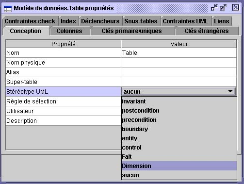

Les Stéréotypes UML
Les stéréotypes vous permettent de classer les éléments du modèle.
Comme les éléments du modèle n’appartiennent qu’à une seule catégorie, ils ne peuvent
pas avoir plus d'un stéréotype. Les stéréotypes sont utilisés pour ajouter de l’information
sémantique aux diagrammes de classes ou de données. Ils peuvent être utilisés
pour dire aux gabarits ou à la génération de modules de traiter certains objets stéréotypés
différemment (par exemple, en générant du code différent).

Ajouter de nouveaux stéréotypes
Pour ajouter un stéréotype UML :
- Sélectionnez Extensions UML et de la barre d’outils Édition, cliquez sur Ajouter
> Stéréotype UML.
- Changez le nom implicite et appuyez sur la touche Retour.

Appliquer un stéréotype à un élément du modèle
Dans la fenêtre de propriétés d’un objet (par exemple, celle d’une table ou d’une classe),
choisissez un stéréotype UML du menu contextuel des stéréotypes UML.

Afficher les stéréotypes
Même si vous pouvez stéréotyper n'importe quel objet du modèle, seul les objets suivants
permettent l’affichage des stéréotypes : les classes, les paquetages, les tables,
les champs, les méthodes, les associations et bouts d’association.
Le nom du stéréotype est affiché à l’intérieur de guillemets. Si un icone est relié à un
objet, cet icone sera également affiché pour les classes, les tables et les paquetages.
L'héritage de stéréotype (avancé)
Un stéréotype peut hériter d'un autre stéréotype. Pour qu’un stéréotype puisse hériter
d'un super-stéréotype :
- Affichez la fenêtre de propriétés du stéréotype.
- Choisissez l'onglet Super-stéréotypes.
- Cliquez Ajouter.